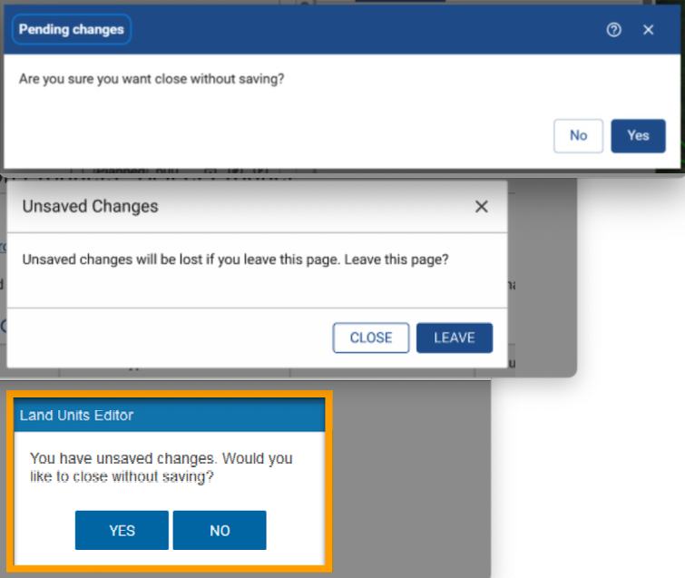
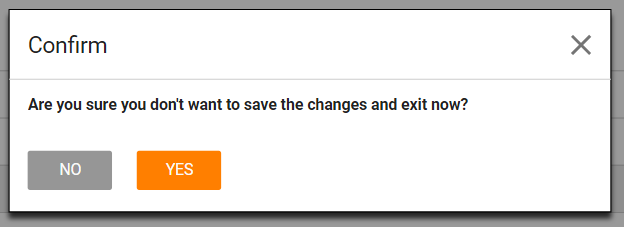
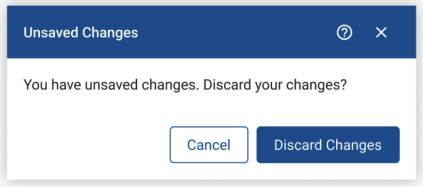

While working under the USDA-NRCS contract, I encountered multiple versions of an “Unsaved Changes” modal across different legacy applications. Over time, the lack of UI standards led to wildly inconsistent user experiences. This caused confusion, increased cognitive load, and undermined trust.

Users encountered variations like:
One version was so unclear it sparked actual laughter from the team:

“No, I’m not sure I don’t want to…wait. What?”
We developed a consistent modal based on the following UX writing principles:

| Element | Content | Notes |
|---|---|---|
| Title | Unsaved Changes | Broke the “verb phrase” pattern to avoid alarming users |
| Message | You have unsaved changes. Discard your changes? | Repeats title to front-load key info and includes clear CTA |
| Buttons | Cancel (left), Discard Changes (right) | Matches standard placement and labeling; prioritizes screen reader flow |
This project shows how UX writing—even in a seemingly small element like a modal—can dramatically improve clarity and consistency. By identifying common inconsistencies, creating reusable patterns, and aligning with accessibility principles, I helped create a solution that respected users' time and reduced friction.